Hi — I'm Honeypot. Bee basics from first buzz to first trophy — that's where we're going, one chapter at a time. Bring a pencil. I'll bring the words.
1
Read the story
Each chapter opens like a film. Vex sets the trap; your guide walks you out of it.
2
Steal the pro move
The dark box is how a champion thinks on stage. It works on brand-new words too.
3
Spell out loud, then write
Say it, spell it OUT LOUD, then write it in the box. Mouth and hand together beat eyes alone.
4
Pass the checkpoint
A short quiz on the chapter you just read. Circle your answers; the back of the book keeps the truth.
5
Play the game, then revise
Every chapter ends with a fun game, answer key at the back. Revise all words at the end and circle the ones you can spell and define.
Bizzing Bee · Lift-Off!1
Lift-Off!The cast
Bizzy — and this book's guide, Honeypot
The crew of Vol. 1
Nobody spells alone. Meet the crew walking this world with you — they will hand you puzzles, run your checkpoints and cheer from the margins.
Bizzy — The little bee who spells the world back together, one petal at a time. · Honeypot — A pot so sweet the whole meadow comes calling.
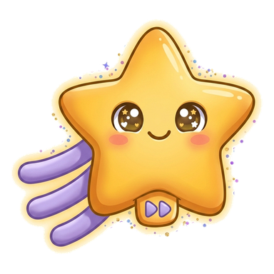
Wish
OVR 80
Champion of the Enchanted Wood
Make a wish — Wish just might grant it.
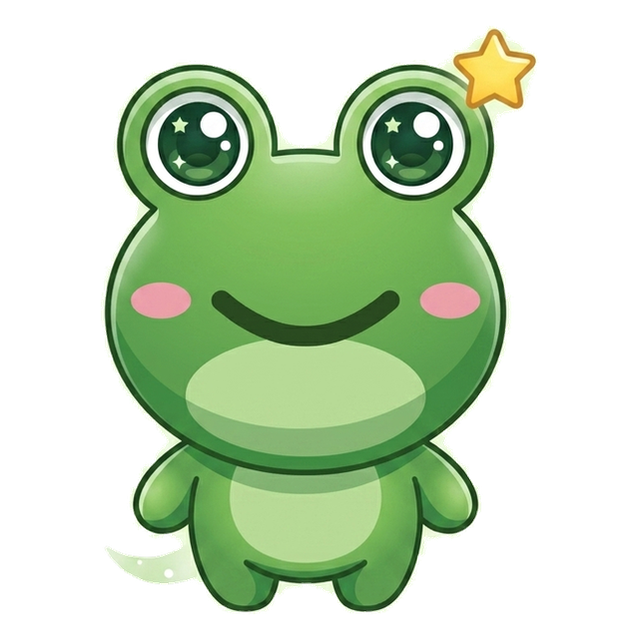
Pond Star
OVR 59
Rookie of the Wild Pond
The pond’s brightest little star.
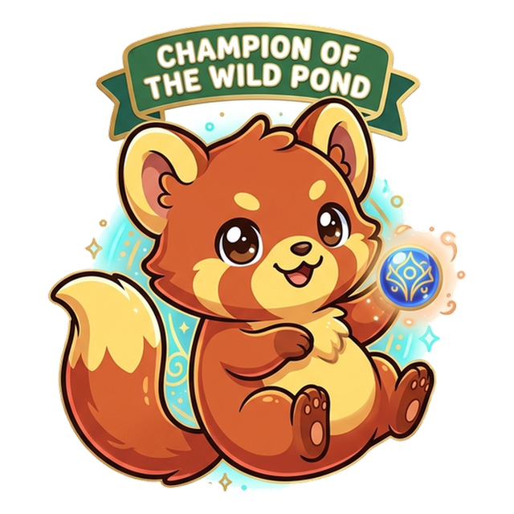
Rusty
OVR 65
Champion of the Wild Pond
Rusty tumbles through every puzzle with a grin.
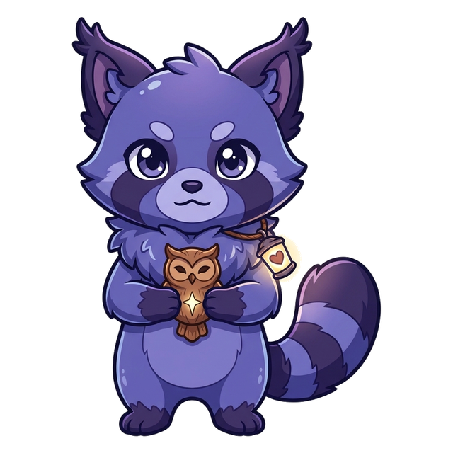
Echo
OVR 65
Speller of the Wildhearts
Finds the way through the darkest night.
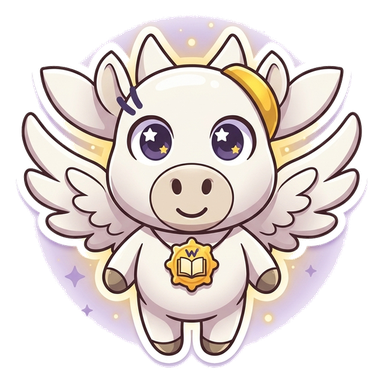
Pegasus
OVR 88
Grandmaster of the Wildhearts
The winged horse who spells among the clouds.
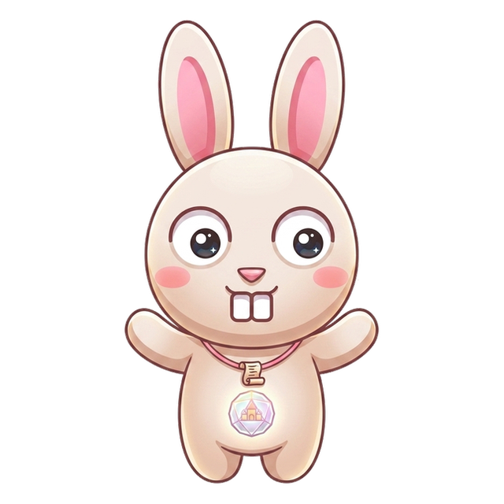
Hoppy
OVR 58
Speller of the Wildhearts
Quick feet, quicker wits.
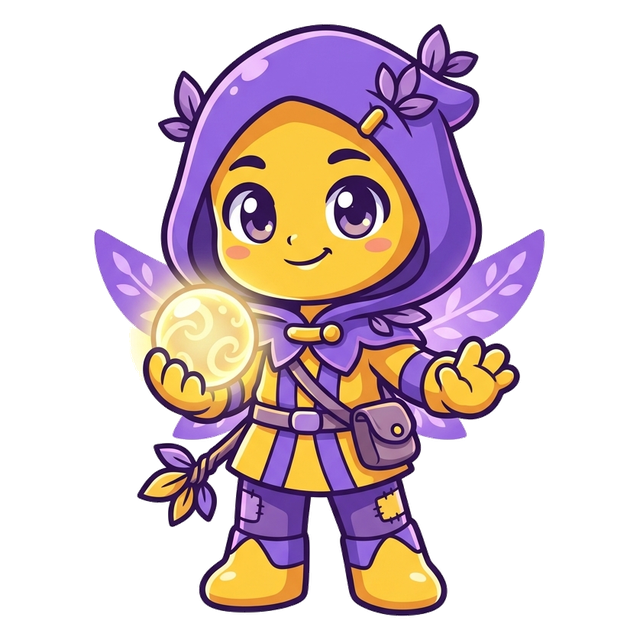
Midnight
OVR 57
Rookie of the Enchanted Wood
A shadow that brings good luck, not bad.
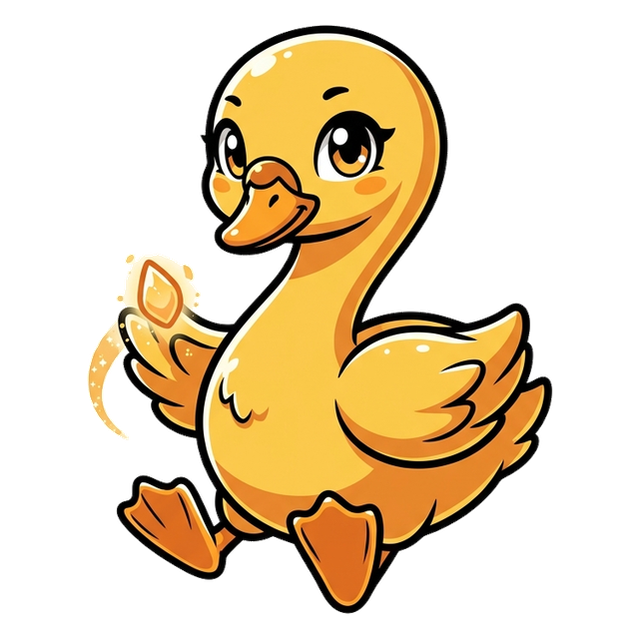
Swan
OVR 72
Champion of the Wildhearts
Graceful above, paddling hard below.
And the other one
Vex the word-moth sneaks through every chapter, planting the exact mistakes real spellers make. Spot the trap before you step in it.
Bizzing Bee · Lift-Off!2
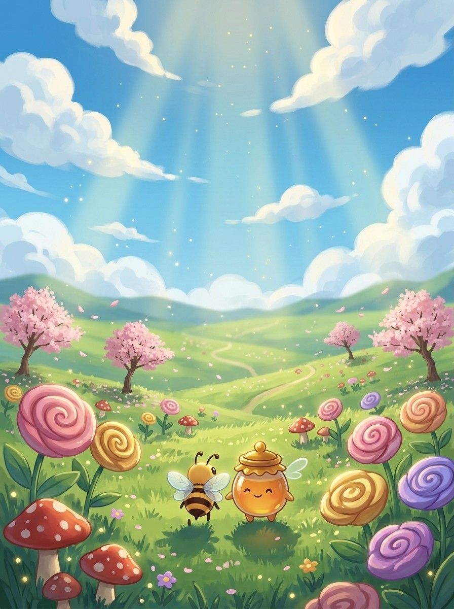
WELCOME TO
The Meadow
Every champion started in the Meadow — first words, first stings, first wins.
Bizzing Bee · Lift-Off!3
1Spelling Bee Basics · the MeadowThe Champion's Routine — say, spell, say
BizzyThe routine: say · spell · say
UH-OH!
VexSay it first — check your ears
GOT IT!
WishMake it a habit — every word, every time
PegasusSpell it steady, like a drumbeat
♫ narratedturn the page — the whole trick, explained →
4
Chapter 1 · The Champion's Routine — say, spell, sayThe idea · ★☆☆
The big idea
Every champion spells the same way: SAY the word, SPELL it letter by letter, then SAY it again. Saying it first proves your ears heard right; saying it after proves your letters match the sound.
The pro move
REMEMBER
Say it. rih-MEM-ber
Spell it. R · E · M · E · M · B · E · R
Say it again. rih-MEM-ber
Syllables. re · mem · ber
Sounds → Letters. [rih=RE] [MEM=MEM] [ber=BER]
The Core
Champions never blurt letters. The routine is always the same three beats: SAY the word out loud, SPELL it at a steady pace, SAY it again. Say–spell–say.
Why say it first?
You cannot spell a word you heard wrong. Saying it back checks your ears: if the judge says 'remember' and you say 'remender', you just caught a mistake before it cost you.
Vex alert
CHAMP + ION — a CHAMP never skips the routine.
Check yourself
Cover the page. Spell these three out loud: remember · practice · together. Say each letter like you mean it.
4. to do something again and again to get better at it
6. in a way that is easy to hear or see
Bizzing Bee · Lift-Off!9
2Spelling Bee Basics · the Great LibraryAlphabet Sounds — cat, city, goat, giant
BizzyLetters have names AND sounds
UH-OH!
VexC has two voices
GOT IT!
Pond StarQ brings U · X is two sounds
HoppyG plays the same game
♫ narratedturn the page — the whole trick, explained →
10
Chapter 2 · Alphabet Sounds — cat, city, goat, giantThe idea · ★☆☆
The big idea
Letters are not their names: B says /b/, not 'bee'. Most letters keep one sound, but c and g each have two — hard before a, o, u and soft before e, i, y. Know what each letter SAYS and you can catch its sound in any word.
The pro move
CIRCUS
Say it. SUR-kus
Spell it. C · I · R · C · U · S
Say it again. SUR-kus
Syllables. cir · cus
Sounds → Letters. [sur=CIR] [kus=CUS]
The Core
A letter's name and a letter's sound are different things. The letter B is named 'bee' but it says /b/, as in bat.
Two faces of c
C is a copycat with two voices. Before a, o, u it is HARD and says /k/: cat, coat, cup. Before e, i, y it is SOFT and says /s/: city, cent, cycle. The next letter decides — look one letter ahead.
Vex alert
Soft g before e — GEN, not JEN.
Check yourself
Cover the page. Spell these three out loud: circus · city · cycle. Say each letter like you mean it.
3Spelling Bee Basics · the Roman ForumVowels & Magic E — cap, cape
BizzyEvery vowel has two voices
UH-OH!
VexY — the substitute vowel
GOT IT!
RustyMagic e flips the switch
MidnightClosed in = short
♫ narratedturn the page — the whole trick, explained →
16
Chapter 3 · Vowels & Magic E — cap, capeThe idea · ★☆☆
The big idea
A, e, i, o, u each have a short voice (cap, pet, sit, hop, cub) and a long voice that says the letter's own name (cape, Pete, kite, hope, cube). A silent e at the end is the magic switch that turns the short voice long.
The pro move
MISTAKE
Say it. mih-STAYK
Spell it. M · I · S · T · A · K · E
Say it again. mih-STAYK
Syllables. mis · take
Sounds → Letters. [mih=MI] [STAYK=STAKE]
The Core
Every vowel has two voices. The SHORT voice is quick: a as in cap, e as in pet, i as in sit, o as in hop, u as in cub. The LONG voice simply says the letter's name: cape, Pete, kite, hope, cube.
The magic e
Add a silent e to the end and the vowel before it goes long: cap→cape, kit→kite, hop→hope, cub→cube, plan→plane. The e itself says nothing — it reaches back over one consonant and flips the switch.
Vex alert
Magic e turns TAK into TAKE — the a says its name.
Check yourself
Cover the page. Spell these three out loud: mistake · escape · invite. Say each letter like you mean it.
4Spelling Bee Basics · the Storm of ElementsSyllables — re, mem, ber
BizzyWords come in beats
UH-OH!
VexEvery beat needs a vowel
GOT IT!
EchoThree ways to find the beats
SwanTwins split the beats
♫ narratedturn the page — the whole trick, explained →
22
Chapter 4 · Syllables — re, mem, berThe idea · ★☆☆
The big idea
A syllable is one beat of a word, and every beat has exactly one vowel sound. Long words are just short words holding hands: re·mem·ber is three easy pieces, not one scary one. Break the word into beats and spell one beat at a time.
The pro move
FANTASTIC
Say it. fan-TAS-tik
Spell it. F · A · N · T · A · S · T · I · C
Say it again. fan-TAS-tik
Syllables. fan · tas · tic
Sounds → Letters. [fan=FAN] [TAS=TAS] [tik=TIC]
The Core
Say 'remember' and clap: re–mem–ber. Three claps, three syllables, three small spelling jobs. A syllable is one push of your voice, and each push carries exactly one vowel sound.
Find the beats
Three easy ways to count beats: clap them, hum the word (each hum-bump is a beat), or rest your hand under your chin — your jaw drops once per syllable. Try 'umbrella': um–brel–la. Three drops.
Vex alert
cal + en + dar — the last beat is DAR with an a, not der.
Sound trap
summer sounds like sommer — at the mic, always ask for the meaning.
Check yourself
Cover the page. Spell these three out loud: fantastic · rabbit · summer. Say each letter like you mean it.
Bizzing Bee · Lift-Off!23
Chapter 4 · Syllables — re, mem, berPractice · ★☆☆
Say it. Spell it out loud. Write it.
fantastic
/ fan-TAS-tik / · /fænˈtæstɪk/
wonderful; extremely good
hook: Three beats: fan + tas + tic — spell them one at a time.
Spelling all ten words right feels ▁▁▁.
rabbit
/ RAB-it / · /ˈræbɪt/
a small animal with long ears that hops
hook: Twin b’s split the beats: rab + bit — each syllable keeps one b.
A ▁▁▁ hopped across the garden path.
summer
/ SUM-er / · /ˈsʌmər/
the warmest season of the year
hook: sum + mer — the twin m’s mark where the beats split.
They practice spelling on the porch every ▁▁▁ evening.
basket
/ BAS-kit / · /ˈbæskɪt/
a container woven from strips, with a handle
hook: bas + ket — two closed beats, both vowels short.
She carried the word cards in a little ▁▁▁.
monster
/ MON-ster / · /ˈmɑnstər/
a large frightening imaginary creature
hook: mon + ster — two beats tame the monster.
Long words look like ▁▁▁ until you break them into beats.
umbrella
/ um-BREL-uh / · /əmˈbrɛlə/
a folding cover that keeps rain off you
hook: um + brel + la — three beats, twin l’s at the split.
hospital/HOS-pih-tul/ a place where sick or hurt people are cared for
calendar/KAL-un-der/ a chart of the days, weeks, and months of a year
celebrate/SEL-uh-brayt/ to do something fun for a special occasion
Lock them in
Pick 4 words from above. Say each one as you write it — three times, no shortcuts. The third copy is the one your hand remembers.
Bizzing Bee · Lift-Off!25
Chapter 4 · Syllables — re, mem, berCheckpoint · ★☆☆
Hoppy · Speller of the Wildhearts runs the checkpoint
Do you own the idea?
Circle your answer, then check the back. No pressure — wrong answers are how the right ones stick. Hoppy's power is Mind Palace — borrow it.
1. What does wonderful mean?
Ato do something fun for a special occasion
Ba container woven from strips, with a handle
Ca chart of the days, weeks, and months of a year
Damazing; very good
2. What does calendar mean?
Athe warmest season of the year
Ba chart of the days, weeks, and months of a year
Cto do something fun for a special occasion
Da container woven from strips, with a handle
3. Which spelling is correct?
Acalendar
Bcallendar
Ccalender
Dcelendar
4. “won + der + ful — full loses an l when it becomes -ful.” — which word is that about?
Abasket
Bumbrella
Cwonderful
Dfantastic
5. Which word fills the gap? “The judges said her steady spelling was ▁▁▁.”
Arabbit
Bcelebrate
Cwonderful
Dbasket
6. Which word belongs to this chapter’s family?
Aplenipotentiary
Bwonderful
Ccredulous
Deffervescence
Dictation round
Hand this page to anyone nearby. They read the words from the answer key (Ch. 4 dictation, at the back) — you write, no peeking.
1.
2.
Bizzing Bee · Lift-Off!26
Chapter 4 · Syllables — re, mem, berGame · ★☆☆
Pegasus's puzzle page
Crossword
1
2
3
4
5
6
7
8
9
Across
3. a large frightening imaginary creature
5. wonderful; extremely good
6. to do something fun for a special occasion
9. a folding cover that keeps rain off you
Down
1. the warmest season of the year
2. a place where sick or hurt people are cared for
4. amazing; very good
7. a container woven from strips, with a handle
8. a small animal with long ears that hops
Bizzing Bee · Lift-Off!27
5Spelling Bee Basics · the Engine RoomSounds to Letters — stretch, spell
BizzyStretch the word like a rubber band
UH-OH!
VexThe quiet sounds sneak away
GOT IT!
PegasusCount sounds on your fingers
SnowfoxThe order IS the spelling
♫ narratedturn the page — the whole trick, explained →
28
Chapter 5 · Sounds to Letters — stretch, spellThe idea · ★☆☆
The big idea
Inside each syllable live single sounds. Stretch the syllable like a rubber band — /s/…/t/…/a/…/m/…/p/ — and write each sound in the order you hear it. Nothing skipped, nothing guessed: that is spelling by sound.
The pro move
SPLASH
Say it. SPLASH
Spell it. S · P · L · A · S · H
Say it again. SPLASH
Syllables. splash (one beat)
Sounds → Letters. [s=S] [p=P] [l=L] [a=A] [sh=SH]
The Core
Take one syllable and stretch it slowly: 'stamp' becomes sss–t–aaa–mmm–p. Five sounds. Now write them in order: S, T, A, M, P. Every sound gets a letter; every letter earns its place.
Stretch like a band
Say the word in slow motion, as if your voice were a rubber band being pulled. Sounds you rush past at normal speed — the n in 'plant', the r in 'crisp' — pop out clearly when stretched.
Vex alert
s-t-a-m-p — do not lose the quiet m before p.
Sound trap
trust sounds like trussed — at the mic, always ask for the meaning.
Check yourself
Cover the page. Spell these three out loud: splash · stamp · blend. Say each letter like you mean it.
6Spelling Bee Basics · the Paper MountainsLetter Teams — sh, ch, th, ph
BizzyMeet the letter teams
UH-OH!
Vexth whispers AND buzzes
GOT IT!
HoppyThe big four
UH-OH!
Vexch wears costumes
♫ narratedturn the page — the whole trick, explained →
34
Chapter 6 · Letter Teams — sh, ch, th, phThe idea · ★☆☆
The big idea
Some sounds are spelled by two letters working as one team: sh in shark, ch in chest, th in thumb, wh in whale, ph in phone, ck in duck, ng in ring. One sound, two letters — spot the team and spell it as a unit.
The pro move
WHISPER
Say it. WIS-per
Spell it. W · H · I · S · P · E · R
Say it again. WIS-per
Syllables. whis · per
Sounds → Letters. [wis=WHIS] [per=PER]
The Core
Stretch 'shark': /sh/–/ar/–/k/. That first sound is ONE sound, but no single letter says it — S and H team up. English is full of these letter teams; treat each team as a single spelling piece.
The big four
SH as in shine and brush. CH as in chest and lunch. TH as in thumb and bath. WH as in whale and whisper. When you hear these sounds, your pencil writes two letters but your mind counts one.
Vex alert
Short o, so the /k/ ending is the CK team — never just k.
Sound trap
whale sounds like wail, wale — at the mic, always ask for the meaning.
Check yourself
Cover the page. Spell these three out loud: whisper · shark · chest. Say each letter like you mean it.
Bizzing Bee · Lift-Off!35
Chapter 6 · Letter Teams — sh, ch, th, phPractice · ★☆☆
Say it. Spell it out loud. Write it.
whisper
/ WIS-per / · /ˈwɪspər/
to speak very softly and quietly
hook: WH team starts it — whisper, whale, what.
She ▁▁▁ the syllables to herself before spelling aloud.
shark
/ SHARK / · /ˈʃɑrk/
a large ocean fish with sharp teeth
hook: SH is one sound, one team — sh + ark.
A ▁▁▁ can grow new teeth its whole life.
chest
/ CHEST / · /ˈtʃɛst/
the front of your body between neck and stomach; a big box
hook: CH team + est — four sounds, five letters.
The pirate’s ▁▁▁ was full of gold coins.
thumb
/ THUM / · /ˈθʌm/
the short thick finger on the side of your hand
hook: TH team starts it, silent b ends it — thum(b).
He gave a ▁▁▁-up after spelling the word.
whale
/ WAYL / · /ˈweɪl/
a huge animal that lives in the sea and breathes air
hook: WH + ALE — magic e makes the a long.
A blue ▁▁▁’s heart is as big as a small car.
phone
/ FOHN / · /ˈfoʊn/
a device used to talk to people far away
hook: PH is the Greek /f/ team — phone, photo, graph.
The good news came by ▁▁▁ that evening.
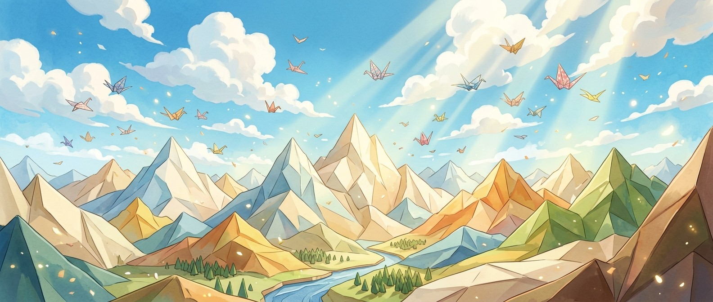
Bizzing Bee · Lift-Off!36
Chapter 6 · Letter Teams — sh, ch, th, phRapid round · ★☆☆
More ammo — one line each.
dolphin/DOL-fin/ a friendly sea animal that clicks and whistles
kitchen/KIH-chin/ the room where food is cooked
string/STRING/ a thin rope for tying things
clock/KLOK/ a machine that shows the time
Lock them in
Pick 4 words from above. Say each one as you write it — three times, no shortcuts. The third copy is the one your hand remembers.
Bizzing Bee · Lift-Off!37
Chapter 6 · Letter Teams — sh, ch, th, phCheckpoint · ★☆☆
Swan · Champion of the Wildhearts runs the checkpoint
Do you own the idea?
Circle your answer, then check the back. No pressure — wrong answers are how the right ones stick. Swan's power is Blink Step — borrow it.
1. What does clock mean?
Aa friendly sea animal that clicks and whistles
Ba machine that shows the time
Cthe room where food is cooked
Da large ocean fish with sharp teeth
2. What does thumb mean?
Athe short thick finger on the side of your hand
Ba thin rope for tying things
Ca large ocean fish with sharp teeth
Dthe front of your body between neck and stomach; a big box
3. “Short o, so the /k/ ending is the CK team — never just k.” — which word is that about?
Akitchen
Bphone
Cstring
Dclock
4. Which word fills the gap? “Her eyes kept jumping to the ▁▁▁ during the test.”
Awhisper
Bphone
Cshark
Dclock
5. Which word belongs to this chapter’s family?
Aremember
Bphenomenon
Cimpasto
Dclock
Dictation round
Hand this page to anyone nearby. They read the words from the answer key (Ch. 6 dictation, at the back) — you write, no peeking.
1.
2.
3.
Bizzing Bee · Lift-Off!38
Chapter 6 · Letter Teams — sh, ch, th, phGame · ★☆☆
Midnight's puzzle page
Scramble & rescue
Unscramble
gnrist
ckocl
ecinhkt
tmubh
hestc
pihdlon
Rescue the vowels
ch_st
sh_rk
wh_sp_r
th_mb
cl_ck
d_lph_n
Bizzing Bee · Lift-Off!39
7Spelling Bee Basics · the Wide StraitVowel Teams — ai, ay, ee, oa
BizzyVowels team up too
UH-OH!
Vexoi/oy · ou/ow · au/aw
GOT IT!
MidnightThe position rule
Pond StarThe long-e twins
♫ narratedturn the page — the whole trick, explained →
40
Chapter 7 · Vowel Teams — ai, ay, ee, oaThe idea · ★☆☆
The big idea
Long vowel sounds are usually spelled by two vowels teaming up: ai/ay for long a, ee/ea for long e, oa/ow for long o, oi/oy and au/aw for the twisty sounds. Position picks the team: ay, oy, ow like the END of words; ai, oi, oa work INSIDE.
The pro move
RAINBOW
Say it. RAYN-boh
Spell it. R · A · I · N · B · O · W
Say it again. RAYN-boh
Syllables. rain · bow
Sounds → Letters. [RAYN=RAIN] [boh=BOW]
The Core
Hear the long a in 'paint'? No magic e in sight — instead two vowels team up: AI. Vowel teams are the second great way English spells long vowels, and each team has a favorite seat in the word.
The position rule
Teams ending in Y or W love the END of a word: play, stay, boy, enjoy, snow, grow. Their twins work INSIDE: paint, rain, coin, point, coat, road. Same sound, different seat — pl-AY but p-AI-nt.
Vex alert
AI inside, OW at the end — two teams, both in position.
Sound trap
sweet sounds like suite — at the mic, always ask for the meaning.
Check yourself
Cover the page. Spell these three out loud: rainbow · crayon · paint. Say each letter like you mean it.
In a blend, every letter still speaks — st, str, spl: just spell what you hear, in order. Silent letters are the opposite: leftover letters from old English that went quiet — the k in knee, w in write, b in climb. Blends you hear; silents you remember.
The pro move
KNIGHT
Say it. NYT
Spell it. K · N · I · G · H · T
Say it again. NYT
Syllables. knight (one beat)
Sounds → Letters. [n=KN] [y=IGH] [t=T]
The Core
Two kinds of letter clusters, opposite rules. BLENDS: every letter sounds — /s//t/ in stop, /s//t//r/ in strong. Stretch and spell.
Blends: trust your ears
st, sp, sk, bl, cl, fr, gr, str, spl, scr — in all of these, each letter earns its sound. Stretch 'splash': /s/ /p/ /l/… every sound is there. Blends never need memorizing; they need careful ears.
Vex alert
GH up front is not silent here — /g/ + host.
Sound trap
knight sounds like nait, night · knee sounds like nee — at the mic, always ask for the meaning.
Check yourself
Cover the page. Spell these three out loud: knight · knee · knock. Say each letter like you mean it.
9Spelling Bee Basics · the VibeStress — find the loud beat
BizzyEvery long word has a loud beat
UH-OH!
VexQuiet beats mumble
GOT IT!
SnowfoxShout it across the playground
EchoLoud beats are honest
♫ narratedturn the page — the whole trick, explained →
52
Chapter 9 · Stress — find the loud beatThe idea · ★☆☆
The big idea
Every word with two or more beats has one beat that shouts: ba-NA-na, to-MOR-row, va-CA-tion. Stressed syllables are spelled the way they sound; the quiet ones are where letters hide. Find the loud beat first — then guard the quiet ones.
The pro move
DELICIOUS
Say it. dih-LIH-shus
Spell it. D · E · L · I · C · I · O · U · S
Say it again. dih-LIH-shus
Syllables. de · li · cious
Sounds → Letters. [dih=DE] [LIH=LI] [shus=CIOUS]
The Core
Say 'banana' three ways: BA-na-na, ba-NA-na, ba-na-NA. Only one sounds right — the middle one. That loud beat is the STRESS, and every long word has exactly one main stress.
Find it fast
Call the word like you’re shouting it across a playground — the syllable you naturally lean on is the stress. Or hum the word: the loudest hum is the stressed beat. va-CA-tion. to-MA-to. mu-SE-um.
Vex alert
Stress on LI — the quiet -cious tail hides five letters.
Sound trap
gorilla sounds like guerrilla — at the mic, always ask for the meaning.
Check yourself
Cover the page. Spell these three out loud: delicious · banana · tomato. Say each letter like you mean it.
Pond Star · Rookie of the Wild Pond runs the checkpoint
Do you own the idea?
Circle your answer, then check the back. No pressure — wrong answers are how the right ones stick. Pond Star's power is Blink Step — borrow it.
1. What does tomato mean?
Atasting extremely good
Ba round red fruit eaten as a vegetable
Ctime away from school or work to rest or travel
Dthe largest kind of ape
2. What does tomorrow mean?
Aa round red fruit eaten as a vegetable
Bthe day after today
Ca starchy vegetable that grows underground
Da long curved yellow fruit
3. Which spelling is correct?
Avecation
Bvaccation
Cvacasion
Dvacation
4. “Stress on MA — to-MA-to, all spelled with plain o’s and a’s.” — which word is that about?
Abanana
Bgorilla
Cvacation
Dtomato
5. Which word fills the gap? “She sliced a ▁▁▁ for the salad.”
Agorilla
Bimportant
Ctomato
Dtomorrow
6. Which word belongs to this chapter’s family?
Atomato
Bunconscionable
Cseparate
Diridescent
Dictation round
Hand this page to anyone nearby. They read the words from the answer key (Ch. 9 dictation, at the back) — you write, no peeking.
1.
2.
3.
Bizzing Bee · Lift-Off!56
Chapter 9 · Stress — find the loud beatGame · ★☆☆
Wish's puzzle page
Scramble & rescue
Unscramble
wmrrtooo
oaotmt
otavcain
mparnitot
musuem
ttooap
Rescue the vowels
v_c_t__n
d_l_c___s
t_m_t_
b_n_n_
g_r_ll_
_mp_rt_nt
Bizzing Bee · Lift-Off!57
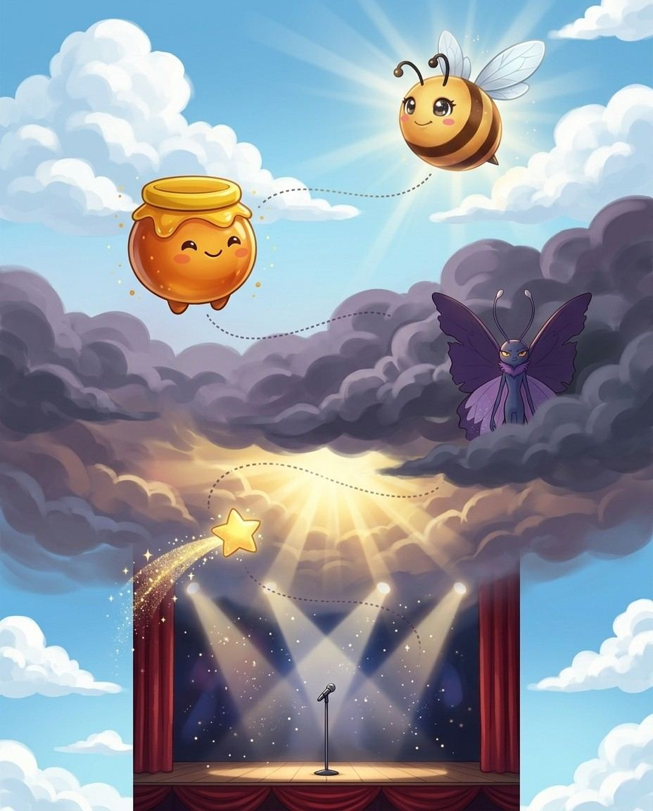
10Spelling Bee Basics · the Big StageThe Sneaky Schwa — the mumbled uh
BizzyMeet the schwa — the lazy uh
UH-OH!
VexAny vowel can hide behind it
GOT IT!
WishTrick 1: robot voice
PegasusTrick 2: call a relative
♫ narratedturn the page — the whole trick, explained →
58
Chapter 10 · The Sneaky Schwa — the mumbled uhThe idea · ★☆☆
The big idea
In quiet syllables, English mumbles every vowel into the same lazy 'uh': the a in about, the o in lemon, the i in pencil. That mumble is the schwa — the #1 spelling trap in the language, because ANY vowel letter can hide behind it.
The pro move
CHOCOLATE
Say it. CHOK-lut
Spell it. C · H · O · C · O · L · A · T · E
Say it again. CHOK-lut
Syllables. choc · o · late
Sounds → Letters. [CHOK=CHOC] [uh=O] [lut=LATE]
The Core
Say 'about'. That first sound is not a clean /a/ — it’s a lazy 'uh'. Say 'lemon' — the o mumbles to 'uh' too. Same mumble, different letters!
Why it is dangerous
The schwa erases the clue. If you hear 'uh', the letter could be A (about), E (taken), I (pencil), O (lemon), or U (circus).
Vex alert
Robot voice: choc-O-LATE — the middle o and the a-e are mumbled.
Check yourself
Cover the page. Spell these three out loud: chocolate · about · lemon. Say each letter like you mean it.
Bizzing Bee · Lift-Off!59
Chapter 10 · The Sneaky Schwa — the mumbled uhPractice · ★☆☆
Say it. Spell it out loud. Write it.
chocolate
/ CHOK-lut / · /ˈtʃɑklʌt/
a sweet food made from cacao beans
hook: Robot voice: choc-O-LATE — the middle o and the a-e are mumbled.
Hot ▁▁▁ is her reward after practice.
about
/ uh-BOWT / · /əˈbaʊt/
concerning; on the subject of
hook: The opening ‘uh’ is the letter A — a-bout.
This chapter is ▁▁▁ the sneakiest sound in English.
lemon
/ LEM-un / · /ˈlɛmʌn/
a sour yellow fruit
hook: The mumbled ending is O — lem-ON, robot voice: lem-ON.
She squeezed a ▁▁▁ into her water.
pencil
/ PEN-sul / · /ˈpɛnsʌl/
a writing tool with a graphite center
hook: The mumble hides an I — pen-CIL.
Spell it in the air with your ▁▁▁ first.
wagon
/ WAG-un / · /ˈwæɡʌn/
a four-wheeled cart pulled by hand or horses
hook: wag-ON — the quiet o mumbles to uh.
The kids pulled their books in a red ▁▁▁.
camera
/ KAM-ruh / · /ˈkæmrə/
a device for taking photographs
hook: Robot voice: cam-E-ra — a hidden e lives in the middle.
The ▁▁▁ flashed when she spelled the winning word.
Bizzing Bee · Lift-Off!60
Chapter 10 · The Sneaky Schwa — the mumbled uhRapid round · ★☆☆
More ammo — one line each.
animal/AN-ih-mul/ a living creature that can move on its own
purpose/PUR-pus/ the reason something is done
magazine/mag-uh-ZEEN/ a thin book with articles and pictures, published regularly
definition/def-uh-NIH-shun/ the meaning of a word
Lock them in
Pick 4 words from above. Say each one as you write it — three times, no shortcuts. The third copy is the one your hand remembers.
Bizzing Bee · Lift-Off!61
Chapter 10 · The Sneaky Schwa — the mumbled uhCheckpoint · ★☆☆
Rusty · Champion of the Wild Pond runs the checkpoint
Do you own the idea?
Circle your answer, then check the back. No pressure — wrong answers are how the right ones stick. Rusty's power is Mind Palace — borrow it.
1. What does lemon mean?
Aa sour yellow fruit
Bthe meaning of a word
Ca writing tool with a graphite center
Dconcerning; on the subject of
2. What does camera mean?
Aa sour yellow fruit
Ba four-wheeled cart pulled by hand or horses
Ca device for taking photographs
Da thin book with articles and pictures, published regularly
3. Which spelling is correct?
Adefinition
Bdefinision
Cdifinition
Ddeffinition
4. “The mumbled ending is O — lem-ON, robot voice: lem-ON.” — which word is that about?
Amagazine
Blemon
Ccamera
Dpurpose
5. Which word fills the gap? “She squeezed a ▁▁▁ into her water.”
Alemon
Babout
Cdefinition
Danimal
6. Which word belongs to this chapter’s family?
Aimpeccable
Bsynchronize
Cveracity
Dlemon
Dictation round
Hand this page to anyone nearby. They read the words from the answer key (Ch. 10 dictation, at the back) — you write, no peeking.
1.
2.
3.
Bizzing Bee · Lift-Off!62
Chapter 10 · The Sneaky Schwa — the mumbled uhGame · ★☆☆
Pond Star's puzzle page
Crossword
1
2
3
4
5
6
7
8
9
10
Across
2. a living creature that can move on its own
7. the meaning of a word
9. a device for taking photographs
10. the reason something is done
Down
1. a four-wheeled cart pulled by hand or horses
3. a thin book with articles and pictures, published regularly
4. concerning; on the subject of
5. a sweet food made from cacao beans
6. a writing tool with a graphite center
8. a sour yellow fruit
Bizzing Bee · Lift-Off!63
11Spelling Bee Basics · the Proving GroundAsk the Right Questions — be a word detective
BizzyDetectives ask before they spell
UH-OH!
VexThe sentence saves you
GOT IT!
Pond StarOrigin is the master clue
HoppyDefinition connects the family
♫ narratedturn the page — the whole trick, explained →
64
Chapter 11 · Ask the Right Questions — be a word detectiveThe idea · ★☆☆
The big idea
At the bee you may ask: the definition, the language of origin, the part of speech, the sentence, and other pronunciations. Each answer is a clue — French origin hints at -eau and ch=/sh/; the sentence separates flour from flower. Champions never spell blind.
The pro move
BOUQUET
Say it. boo-KAY
Spell it. B · O · U · Q · U · E · T
Say it again. boo-KAY
Syllables. bou · quet
Sounds → Letters. [boo=BOU] [KAY=QUET]
The Core
On stage you are a detective, and questions are free. 'May I have the definition? The language of origin? The part of speech? Could you use it in a sentence?
Origin is the master clue
French words love silent endings and soft sounds: ballet, bouquet, machine. Greek words use ph, y, and ch=/k/: photo, gym, chorus. Spanish brings canyon and tornado; Japanese brings karate.
Vex alert
French: silent-t ending -QUET says /kay/.
Sound trap
flour sounds like flower · plain sounds like plane — at the mic, always ask for the meaning.
Check yourself
Cover the page. Spell these three out loud: bouquet · ballet · chorus. Say each letter like you mean it.
Bizzing Bee · Lift-Off!65
Chapter 11 · Ask the Right Questions — be a word detectivePractice · ★☆☆
Say it. Spell it out loud. Write it.
bouquet
/ boo-KAY / · /buˈkeɪ/
a bunch of flowers arranged nicely
hook: French: silent-t ending -QUET says /kay/.
The winner received a ▁▁▁ of roses.
ballet
/ ba-LAY / · /bæˈleɪ/
a graceful kind of dance that tells a story
hook: French: the final /ay/ is -ET with a silent t.
Her sister takes ▁▁▁ on Saturdays.
chorus
/ KOR-us / · /ˈkɔrʌs/
a group of singers; the repeated part of a song
hook: Greek: ch says /k/ — chorus, echo, school.
The whole ▁▁▁ sang the school song.
echo
/ EK-oh / · /ˈɛkoʊ/
a sound that bounces back so you hear it again
hook: Greek: the /k/ is spelled CH — e-CHo.
Her voice made an ▁▁▁ in the empty gym.
flour
/ FLOW-er / · /ˈflaʊər/
the powder made from grain, used for baking
hook: Sounds exactly like flower — the sentence tells you which.
The baker sifted the ▁▁▁ twice.
plain
/ PLAYN / · /ˈpleɪn/
simple, with nothing added; flat open land
hook: Homophone of plane — ask for a sentence!
She wore a ▁▁▁ blue shirt.
Bizzing Bee · Lift-Off!66
Chapter 11 · Ask the Right Questions — be a word detectiveRapid round · ★☆☆
More ammo — one line each.
canyon/KAN-yun/ a deep valley with steep rocky sides
karate/kuh-RAH-tee/ a Japanese way of fighting using hands and feet
waffle/WAH-ful/ a crisp breakfast cake with a grid of squares
suite/SWEET/ a set of connected rooms; a matching set
Lock them in
Pick 4 words from above. Say each one as you write it — three times, no shortcuts. The third copy is the one your hand remembers.
Bizzing Bee · Lift-Off!67
Chapter 11 · Ask the Right Questions — be a word detectiveCheckpoint · ★☆☆
Echo · Speller of the Wildhearts runs the checkpoint
Do you own the idea?
Circle your answer, then check the back. No pressure — wrong answers are how the right ones stick. Echo's power is Unflappable — borrow it.
1. What does waffle mean?
Aa sound that bounces back so you hear it again
Ba deep valley with steep rocky sides
Ca crisp breakfast cake with a grid of squares
Da set of connected rooms; a matching set
2. What does canyon mean?
Aa sound that bounces back so you hear it again
Ba bunch of flowers arranged nicely
Csimple, with nothing added; flat open land
Da deep valley with steep rocky sides
3. “Dutch: double f + -LE ending holds the final beat.” — which word is that about?
Aplain
Bchorus
Ckarate
Dwaffle
4. Which word fills the gap? “Saturday means a ▁▁▁ with syrup.”
Aplain
Becho
Cwaffle
Dbouquet
5. Which word belongs to this chapter’s family?
Aeloquence
Bautophagy
Cransack
Dwaffle
Dictation round
Hand this page to anyone nearby. They read the words from the answer key (Ch. 11 dictation, at the back) — you write, no peeking.
1.
2.
3.
Bizzing Bee · Lift-Off!68
Chapter 11 · Ask the Right Questions — be a word detectiveGame · ★☆☆
Honeypot says: you just finished a whole book. That happened.
DONE
★
+1
Every word in here also lives in the Bizzing Bee app, with real audio, games and a coach that remembers what you miss. Paper for the muscles, app for the ears.
Bizzing Bee is an independent study project — not affiliated with, sponsored by, or endorsed by the Scripps National Spelling Bee, the North South Foundation, or Merriam-Webster. Competition names appear only to describe what the practice material relates to. Definitions, sentences, hints and stories are written for this project. Typefaces are open-licensed (SIL OFL).

 The Bizzing Bee
The Bizzing Bee